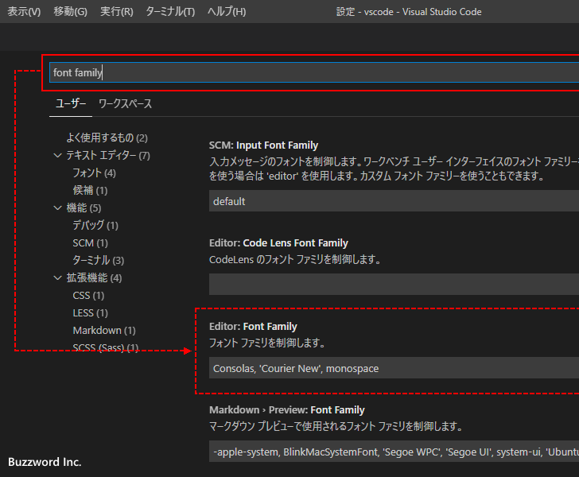

エディターで使用するフォントの種類とサイズの設定
Visual Studio Code のエディターでファイルを開いた時にテキストの表示に使用されるフォントの種類とサイズの設定方法について解説します。フォントは複数の種類を指定することができます。
エディターのフォントの種類を設定する
Visual Studio Code のエディターで使用するフォントの種類を設定するには「ファイル」メニューの中にある「ユーザー設定」をクリックし、さらに表示されたサブメニューの中から「設定」をクリックしてください。

Visual Studio Code の設定画面が表示されます。
画面上部の検索ボックスに「font family」と入力してください。いくつか設定項目が表示されますが、「Editor:Font Family」の設定項目が関係する設定項目です。

デフォルトで設定されているフォントの種類は「Consolas, 'Courier New', monospace」になっています。変更するには新しいフォントの種類を入力してください。複数のフォントを指定する場合はカンマ(,)で区切ってい入力し、フォント名に空白が含まれる場合はシングルクオーテーションで囲って記述してください。
複数のフォントの種類を指定した場合は、前に指定したフォントが優先となります。今回は「Consolas, 'ＭＳ 明朝', monospace」にように変更しました。
フォントサイズが小さいので分かりにくいですが、変更前と変更後でフォントの種類が変更されています。
エディターのフォントのサイズを設定する
次に Visual Studio Code のエディターで使用するフォントのサイズを設定する方法です。フォントの種類を変更したときと同じ手順で Visual Studio Code の設定画面を表示したあと「font size」と入力してください。いくつか設定項目が表示されますが、「Editor:Font Size」の設定項目が関係する設定項目です。
デフォルトで設定されているフォントサイズは 14 です。(単位はピクセルです)。変更するには新しいフォントサイズを入力してください。今回は 20 を指定しました。(設定可能な値は 6 以上 100 以下です)。
変更前と変更後でフォントのサイズが変更されています。
-- --
Visual Studio Code のエディターでファイルを開いた時にテキストの表示に使用されるフォントの種類とサイズの設定方法について解説しました。
( Written by Tatsuo Ikura )

著者 / TATSUO IKURA
初心者～中級者の方を対象としたプログラミング方法や開発環境の構築の解説を行うサイトの運営を行っています。